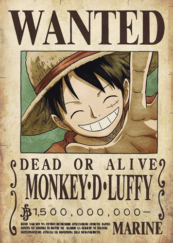
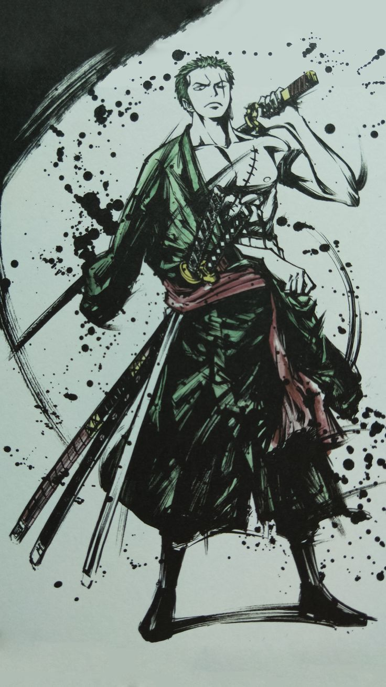

Monkey D. Luffy é o protagonista do anime e mangá One Piece. Luffy é um pirata que deseja ser o Rei dos Piratas. É o capitão da tripulação do Bando do Chapéu de Palha e líder da Grande Frota dos Chapéus de Palha.
Roronoa Zoro, apelidado de "Pirate Hunter" Zoro, é um personagem fictício da franquia One Piece criada por Eiichiro Oda. Na história, Zoro é o primeiro a se juntar a Monkey D. Luffy depois que ele é salvo de ser executado na Base Marinha, tornando-se um aliado / anti-herói.
Maior sonho se tornar o melhor espadachim do mundo.
Nami é um personagem fictício da franquia One Piece criada por Eiichiro Oda. Ela é baseada em Ann e Silk, dois personagens do mangá anterior de Oda, Romance Dawn. Ela é apresentada como ladrão e batedor de carteiras que possui habilidades cartográficas, meteorológicas e de navegação.
Maior sonho desenhar mapas de todos os lugares do mundo.
O maior mentiroso de mundo, medroso, mais está evoluindo. Ótimo em mira igual o pai. Conhecido também como Deus Usopp.
Maior sonho ser um grande guerreiro do mar.